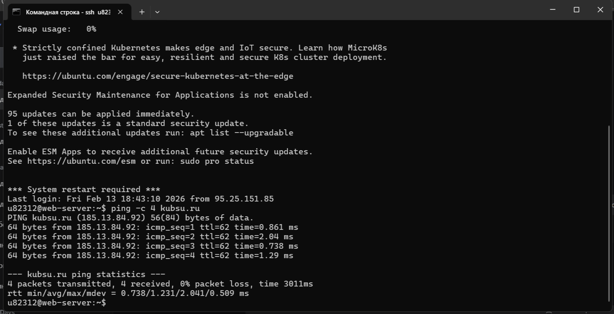
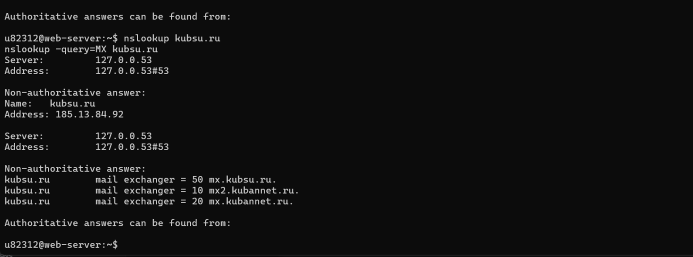
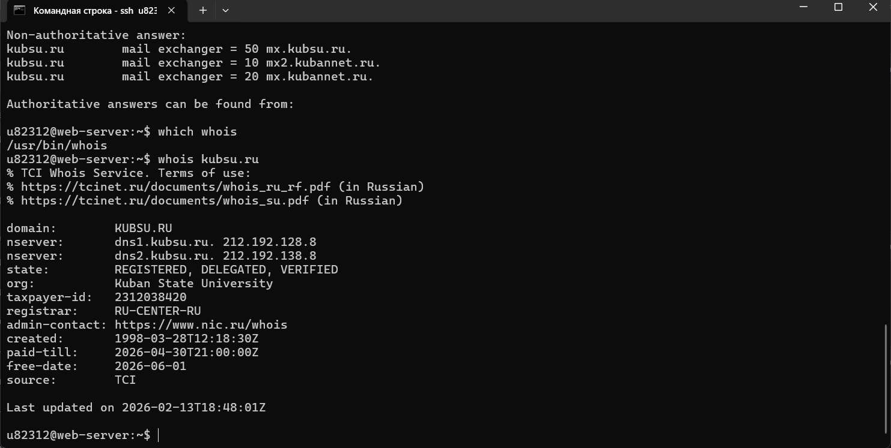
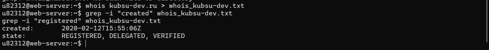

Получить от преподавателя на практике логин и пароль доступа к учебному
серверу kubsu-dev.ru.
Задание 2

С помощью команды ping на учебном сервере узнать IP-адрес веб-сервера
kubsu.ru
Задание 3

С помощью команды nslookup узнать A-записи и MX-записи домена kubsu.ru и
kubsu-dev.ru
Задание 4


С помощью команды whois узнать дату регистрации домена kubsu.ru и kubsdev.ru,
Задание 5
с помощью
SSH склонировать репозитарий со скриншотами и страницей в каталог www. Веб-
страница должна открываться по адресу http://ваш_логин.kubsudev.ru/каталог_задания_1/
С помощью программы FileZilla или любого другого клиента SFTP соединиться с
учебным сервером с вашим логином и паролем по протоколу SFTP и скопировать на
локальный компьютер файлы задания из каталога www.